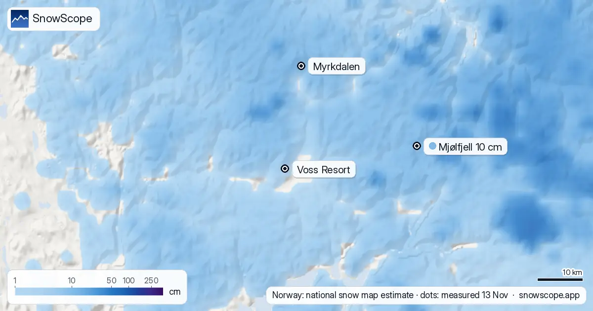
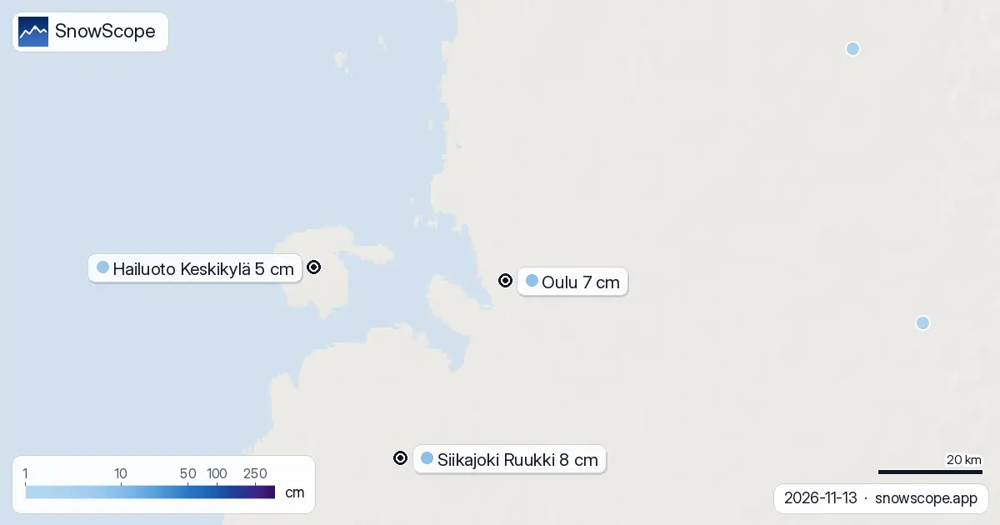

Snöprognos för Voss Resort: regn i dalen, upp till 35 cm på toppen i veckan (14 november 2026)
Voss är ett kustnära fjäll: vädret kommer rakt in från Nordsjön, blött och tungt. I dag betyder det en bar stad och vita fjälltoppar. Norges nationella snökarta uppskattar ungefär 20 cm snö på 1 348 m, ungefär 9 cm på 1 096 m och bara ungefär 3 cm på 287 m, nära gondolens dalstation. Det här är uppskattningar; närmaste station som mäter snö, Mjølfjell på 695 m och 30 km österut, hade 10 cm den 13 november. Den stora nyheten är veckan som kommer.
Se snöprognosen för Voss Resort Fjellheisar live i SnowScope-appenSnödjup, pudervarningar och 3D-kartan, gratis.
En blöt vecka, vitt ovanför 600 m
Vi räknar med ungefär 35 cm på toppen av Voss Resort (948 m) de kommande sju dagarna, 28 cm på 615 m och ungefär 5 cm i dalen (283 m). Bara de första två dagarna ger ungefär 22 cm på toppen.
De andra prognoserna vi jämför med spretar mycket på toppen, från 14 till 98 cm. De är överens om en sak: det blir inget regn på toppen, men i dalen kommer ungefär tre fjärdedelar av nederbörden som regn, och snögränsen ligger runt 550 till 620 m. Under den gränsen blir det slask och regn; ovanför den en riktig uppbyggnad.

Det normala i Voss: mycket, men sent nertill
Våra 46 tidigare vintrar visar hur mycket snö den här kusten kan ge. Det normala snödjupet på toppen är 58 cm den 14 november och 121 cm den 15 december. En normal vinter når max ungefär 346 cm på toppen, och den största i vår historik nådde 545 cm.
Nertill är det en annan sak. På 283 m är det normala snödjupet den 14 november 20 cm, men nästan en vinter av fyra finns det ingen snö alls det datumet, och ungefär en av åtta har fortfarande ingenting den 21 november. Regn på snö hör till vardagen här.
Mindre snö än förr
Den långa historiken är inte platt. På toppen var det typiska maxdjupet 386 cm under de första 15 vintrarna och 306 cm under de senaste 15; snödagarna minskade från 289 till 252. Förra vintern nådde max 247 cm på toppen. Det är fortfarande en plats med mycket snö, men de låga backarna har blivit mindre pålitliga.
Har Voss Resort öppnat?
Inte än. Voss Resorts sida med öppettider anger en premiärhelg från 4 till 6 december och daglig skidåkning från 11 december till 11 april. Där står också att öppningen beror på snö och väder.
Tips för skidåkare
- Tung, blöt snö på ett tunt underlag är ett klassiskt upplägg för flaklaviner i branta sluttningar ovanför liftarna: kolla lavinprognosen innan du åker offpist.
- Räkna med regn och slask i Voss och på E16; snökedjor eller bra vinterdäck på fjällvägarna.
- Om toppen får den övre änden av prognosen, vänta en dag så att snön hinner sätta sig innan du åker brant terräng.
Fler kartor (externa webbplatser)
Referenser och källor
- seNorge, Norges nationella snökarta (NVE och MET Norway), öppna data under NLOD-licensen www.senorge.no/
- Voss Resort, officiell sida: öppettider och liftstatus, läst 2026-11-13 www.vossresort.no/ditt-besok/opningstider/
- Varsom, lavinvarningar för Norge www.varsom.no/
- MET Norway, stationsobservationer (CC BY 4.0), dagliga rapporter som de publiceras av Ogimet www.ogimet.com/
Om siffrorna
Uppmätt snö: morgonavläsningar den 13 november 2026 vid de officiella väderstationerna i Sverige (SMHI öppna data), Finland (FMI öppna data, CC BY 4.0) och Norge (MET Norways stationsrapporter, CC BY 4.0, publicerade av Ogimet). Norges nationella snökarta seNorge (NVE och MET Norway, NLOD) ger uppskattningarna på ett rutnät om 1 km för backarna. Våra siffror: SnowScopes prognos för de kommande sju dagarna på tre höjder i skidområdet, jämförd med oberoende prognoser (ECMWF, ICON, GFS, GEM) för 14 till 20 november; snöhistorik för 46 tidigare vintrar (1980-81 till 2025-26), en modell av det förflutna korrigerad för höjd. Öppningsdatum: anläggningarnas egna sidor, lästa den 13 november 2026. Pistlängd och antal liftar: kartläggning i OpenSkiMap.
Officiella lavinprognoser: Varsom (NVE)
Citera den här rapporten
För forskning, undervisning eller press: siffrorna och diagrammen får återanvändas fritt under CC BY 4.0 med den här källhänvisningen.
SnowScope (2026), Snöprognos för Voss Resort: regn i dalen, upp till 35 cm på toppen i veckan (14 november 2026), https://snowscope.app/blog/sv/2026/11/voss-resort-snow-forecast-14-november-2026.html, hämtad 2026-11-14
SnowScope (Atlas Labs). (2026, November 14). Snöprognos för Voss Resort: regn i dalen, upp till 35 cm på toppen i veckan (14 november 2026). SnowScope snow reports. https://snowscope.app/blog/sv/2026/11/voss-resort-snow-forecast-14-november-2026.html
BibTeX
@misc{snowscope2026vossresortsnowforecast14,
author = {{SnowScope (Atlas Labs)}},
title = {Snöprognos för Voss Resort: regn i dalen, upp till 35 cm på toppen i veckan (14 november 2026)},
year = {2026},
month = nov,
howpublished = {\url{https://snowscope.app/blog/sv/2026/11/voss-resort-snow-forecast-14-november-2026.html}},
note = {Published 2026-11-14 14:49 UTC; accessed 2026-11-14}
}· CC BY 4.0 · Metoder, data och verktyg →
Voss Resort Fjellheisar: snö och temperatur efter höjd, i vinter jämfört med förra (verktyg) →
Följ Voss Resort Fjellheisar
Gratis: ett meddelande när nysnö är på väg, och prognosen varje morgon.
Fler snörapporter

Uppmätt snö i Uleåborg den 13 november 2026: 7 cm i Kaukovainio, 5 cm på Karlö, 8 cm i Ruukki, allt nytt sedan torsdagen. Lite mer på väg före måndagens töväder.

Uppmätt snö runt Östersund den 13 november 2026: 19 cm på Norderön, 24 cm i Marby, 33 cm i Rissna. Tre till fyra gånger det vanliga snödjupet för datumet, med en kall och torr helg framför sig.

Uppmätt snödjup i Oslo den 13 november 2026: 4 cm på Blindern, 31 cm vid Bjørnholt och 37 cm på Tryvannshøgda. Hur en vanlig mitt i november ser ut och vad helgen gör med snön.